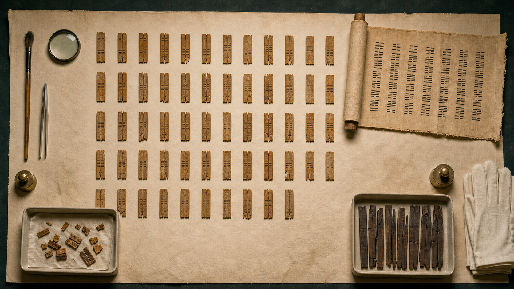
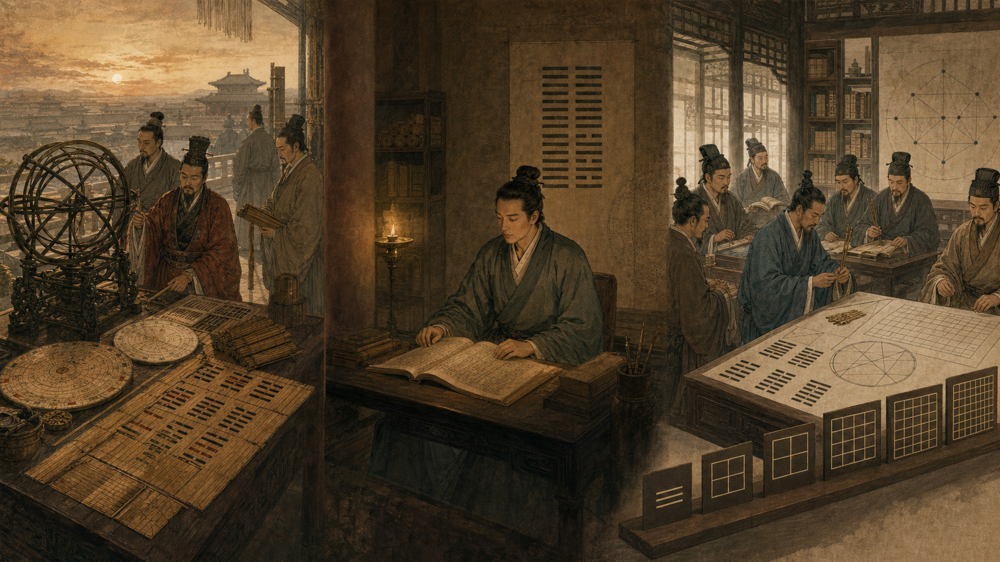
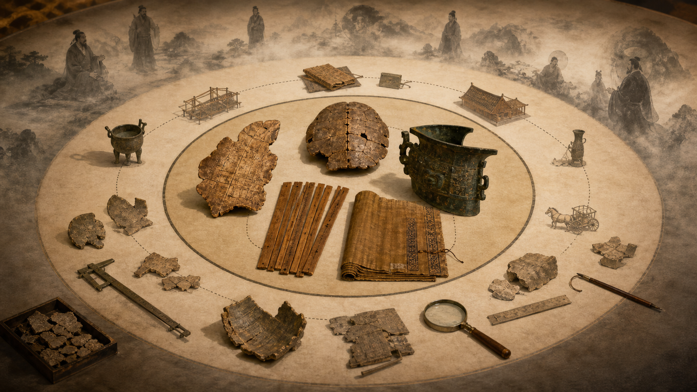

Chu Dịch 周易 · Zhouyi
Lõi gồm 64 hình sáu hào, tên quẻ, quái từ và hào từ. Có lẽ được viết thành một dạng nhận biết được vào khoảng thế kỷ IX–VIII TCN.
Khảo cứu lịch sử văn bản & khảo cổ
Nguồn gốc, lý do hình thành và con đường từ nghi lễ bói thời Đồ đồng đến những hệ lý thuyết đang lưu truyền hiện nay.
六爻 · sáu hào
01 · Luận đề chính
Các hình trong tài liệu được tạo bằng AI để mô tả khái niệm. Chúng không phải ảnh chụp hiện vật, bản phục dựng khảo cổ chính thức hay nguồn chứng cứ lịch sử.
Kinh Dịch không được “phát minh” trong một lần, bởi một người, để trình bày sẵn một học thuyết âm–dương hoàn chỉnh. Nó là kết quả của nhiều tầng thực hành, văn bản và diễn giải chồng lên nhau trong gần ba thiên niên kỷ.
Lõi Chu Dịch ban đầu gần với một cẩm nang bói và hỗ trợ quyết định có tính nghi lễ hơn là một trước tác triết học. Những khái niệm được xem là “lý thuyết Kinh Dịch” ngày nay—âm dương như nguyên lý vũ trụ, Thái cực, đạo quân tử, ngũ hành, Bát cung, Tiên thiên–Hậu thiên—không có cùng niên đại.[1]
Công thức ngắn nhất: Kinh Dịch sinh ra từ nhu cầu ra quyết định trong bất định; hình thành nhờ việc mã hóa dấu hiệu thành quẻ và văn bản; trở thành triết học nhờ Dịch Truyện; trở thành hệ vũ trụ–chính trị nhờ nhà Hán; và tiếp tục biến đổi qua mọi thời đại.
02 · Cấu tạo văn bản
Lõi gồm 64 hình sáu hào, tên quẻ, quái từ và hào từ. Có lẽ được viết thành một dạng nhận biết được vào khoảng thế kỷ IX–VIII TCN.
Bảy thiên chia thành mười phần, thường gọi là Thập Dực. Chúng diễn giải Chu Dịch bằng đạo đức, vũ trụ luận, tượng và số; chủ yếu thuộc thế kỷ IV–II TCN.
Khối văn bản kinh điển gồm Chu Dịch cộng các lớp Dịch Truyện được tuyển chọn, ghép và kinh điển hóa dần từ thời Hán.
Toàn bộ lịch sử chú giải, bói toán, tượng số, nghĩa lý, đồ hình và tiếp nhận từ Hán đến hiện đại.
Vì các bản truyền thế thường đặt Thoán và Tượng ngay cạnh kinh văn, người đọc rất dễ tưởng những câu đó được viết cùng lúc. Đây là lý do phải tách “kinh” khỏi “truyện” trước khi nghiên cứu nguồn gốc.
Nguồn chính: Nielsen 2024 về hai phần cấu thành Yijing, niên đại lõi và Thập Dực.[1] Oxford Academic về cấu tạo bảy thiên/mười phần và vai trò chuyển hóa của Thập Dực.[8]
03 · Phả hệ thánh nhân
Truyền thống từ thời Hán và các thời sau xây dựng một phả hệ gồm bốn thánh:
| Nhân vật | Vai trò theo truyền thống | Đánh giá lịch sử |
|---|---|---|
| Phục Hy | Sáng tạo bát quái | Nhân vật văn hóa–thần thoại; không có chứng cứ khảo cổ đương thời. |
| Văn Vương | Chồng thành 64 quẻ, sắp thứ tự hoặc viết quái từ | Không có minh văn Tây Chu xác nhận quyền tác giả; các truyền thống cũng không hoàn toàn nhất quán. |
| Chu Công | Viết các hào từ | Không có hồ sơ đương thời chứng minh; văn bản có dấu hiệu tích lũy và biên tập nhiều lớp. |
| Khổng Tử | Viết toàn bộ Thập Dực | Đồng thuận hiện đại bác quyền tác giả trực tiếp; Thập Dực gồm nhiều thể loại và phần lớn muộn hơn ông. |
Phả hệ này quan trọng vì nó tạo uy tín chính thống: Kinh Dịch được trình bày như kết tinh trí tuệ của các thánh nhân và nền tảng của trật tự Chu–Nho. Nhưng nó là lịch sử thiêng và lịch sử tiếp nhận, không phải một hồ sơ tác giả đã được khảo cổ xác minh.
Điểm phương pháp: Không có lời tựa Tây Chu nói “sách này được tạo ra vì lý do X”. Vì vậy, lý do hình thành phải được tái dựng từ loại hiện vật, hình thức lời bói, nội dung câu hỏi và môi trường chính trị–nghi lễ; không thể suy ra chỉ từ truyền thuyết.
Nguồn chính: Tổng quan truyền thống tác giả và đồng thuận niên đại hiện đại trong Nielsen.[1] Phân tích Thập Dực và vấn đề quyền tác giả Khổng Tử trong Oxford Academic.[8]
04 · Dòng thời gian
Việc nung xương để quan sát vết nứt đã có từ thời Đồ đá mới. Những hiện vật này cho thấy một nền văn hóa dùng dấu hiệu vật chất để xử lý bất định, nhưng chưa có 64 quẻ, quái từ, hào từ hay học thuyết âm–dương. Vì vậy, chúng là tiền sử xa của hoạt động bói, không phải “Kinh Dịch nguyên thủy”.
Khảo cổ học cho thấy thủ tục bói càng phức tạp thường càng gắn với chuyên gia nghi lễ, bộ máy quan liêu và quyền lực nhà nước.[2]
Tại Ân Khư–Anyang, xương vai bò hoặc yếm rùa được xử lý và áp nhiệt để tạo vết nứt. Vua hay chuyên gia giải vết nứt; văn khắc có thể ghi ngày, người bói, câu hỏi, lời đoán và đôi khi kết quả thực tế.
Các câu hỏi hoàn toàn thực dụng: tế tự, mưa gió, mùa màng, săn bắn, chiến tranh, huy động lao động, bệnh tật, giấc mộng, sinh nở và người kế tự. Hơn 150.000 mảnh giáp cốt cuối Thương đã được phát hiện; nghiên cứu C-14 định thời Vũ Đinh khoảng 1254–1197 TCN và giai đoạn kết thúc Thương khoảng 1041 TCN.[3]
Chức năng: quản trị bất định, tạo quyết định có thẩm quyền và củng cố vị trí của vua cùng giới chuyên gia nghi lễ. Tuy nhiên, giáp cốt Thương không phải một bản Chu Dịch.
Trên xương, mai, đồng khí, đá và gốm có những dãy số; một phần đáng chú ý gồm sáu vị trí. Chúng có lẽ thuộc tiền sử gần của đồ hình sáu hào, nhưng mối nối trực tiếp đến bản Chu Dịch vẫn còn tranh luận.
Nghiên cứu thống kê gợi ý thi thảo, que tính, vật gieo hay xúc xắc có thể tham gia tạo số, nhưng cơ chế chính xác chưa được xác định.[4] Bói xương và bói số từng cùng tồn tại; không có một cuộc thay thế đột ngột đã được chứng minh.
Thuật toán “Đại diễn” dùng 50 cọng trong bản Hệ Từ truyền thế thuộc lớp văn bản muộn hơn lõi. Không nên dùng nó như một bản mô tả chắc chắn về cách tạo dãy số ở cuối Thương hay đầu Tây Chu.
Lõi của mỗi quẻ gồm hình sáu hào, tên quẻ, quái từ và sáu hào từ đọc từ dưới lên. Nội dung cổ nói đến chiến tranh, tù binh, tế lễ, hôn nhân, đi lại, săn bắn, nông nghiệp, kiện tụng và những công thức như cát, hung, vô cữu, hối, lận, lợi.
Nhiều câu có vần, có hình ảnh điềm báo và cấu trúc gần với lời dự đoán trong hoạt động bói. Mô hình phù hợp nhất là nhiều thế hệ quan bói, sử quan và thư lại đã ghi, truyền, tuyển chọn rồi biên tập các công thức cùng ký ức lịch sử thành một cẩm nang.[5][6]
Edward Shaughnessy định niên đại phần quan trọng của lõi vào khoảng cuối thế kỷ IX TCN dựa trên ngôn ngữ, vần và minh văn đồng khí, đồng thời cảnh báo rằng khâu biên tập cuối có thể muộn hơn một hoặc hai thế kỷ.[6]
Tả truyện, được biên tập khoảng thế kỷ IV TCN, lưu những câu chuyện sử dụng Chu Dịch trong ngoại giao và chính trị. Cũng trong môi trường này, các văn bản về sau gọi là Thập Dực diễn giải quẻ bằng thời–vị, cương–nhu, đạo quân tử, Trời–Đất, tượng, số và biến hóa.
Bản tre Thượng Hải khoảng 300 TCN cho thấy lõi đã khá ổn định nhưng vẫn có nhiều dị thể chữ.[7] Những bản thuộc truyền thống khác như Quy Tàng cho thấy Chu Dịch không phải hệ bói quẻ duy nhất.[11]
Bản lụa Mã Vương Đôi khoảng 175 TCN có đủ 64 quẻ nhưng thứ tự khác, kèm một tập chú giải không đồng nhất với Thập Dực truyền thế.[9] Khoảng 136 TCN, Chu Dịch cùng một số chưa xác định trong Thập Dực được đưa vào hệ kinh điển triều đình. Mảnh Hy Bình Thạch Kinh từ năm 175 SCN cho thấy một bản nhà nước đã gần với truyền bản hiện nay.[1]
Học giả Hán ghép quẻ với âm dương, lịch, tháng, tiết khí, thiên can–địa chi, ngũ hành, thiên văn, tai dị và chính trị. Đây là nguồn của phần lớn tượng số kỹ thuật về sau.
Vương Bật đọc quẻ như tình thế có nguyên lý, phản ứng trước những bảng tương ứng Hán quá phức tạp. Dòng Vương Bật–Hàn Khang Bá được Khổng Dĩnh Đạt và triều Đường chuẩn hóa. Thời Tống, Thiệu Ung, Chu Đôn Di, Trình Di và Chu Hy tiếp tục xây dựng số tượng, Thái cực, đạo đức và hệ thống Tiên thiên–Hậu thiên.[13][14]
Khảo chứng đời Thanh, phong trào Nghi cổ thế kỷ XX và các thủ bản khai quật đã tách lớp bói thời Đồ đồng khỏi những bình giải triết học muộn. Ở phương Tây, Kinh Dịch lại được đọc qua thần học Dòng Tên, số nhị phân của Leibniz, bản dịch Legge–Wilhelm, tâm lý học Jung và các trào lưu New Age.
Vì sao 64? Khi đã có hai kiểu hào và sáu vị trí, số tổ hợp đầy đủ là 26 = 64. Nhưng công thức này không cho biết vì sao lịch sử đã chọn sáu vị trí, khi nào toàn bộ 64 tổ hợp được dùng, hay hệ thống được thiết kế một lần hay tích lũy dần.
05 · Nguyên nhân chức năng
Xã hội nông nghiệp và chiến tranh thời Đồ đồng phải quyết định khi không thể biết chắc thời tiết, mùa màng, bệnh tật, kết quả quân sự, hôn nhân hay kế tự. Nghi thức bói buộc người hỏi xác định vấn đề, tạo dấu hiệu, diễn giải khả năng và chọn hành động. Vì vậy, nó không chỉ nhằm “nhìn thấy số phận”, mà còn tổ chức quá trình ra quyết định.[12]
Một quyết định được trình bày như phù hợp với tổ tiên, Trời hoặc trật tự nghi lễ có sức nặng hơn ý kiến cá nhân. Người kiểm soát nghi lễ, chữ viết và việc giải dấu hiệu cũng nắm một nguồn quyền lực xã hội–chính trị.[2]
Vết nứt hay một lần gieo số chỉ tồn tại trong khoảnh khắc. Khi kết quả được gắn với đồ hình, tên quẻ, lời chung và lời cho từng hào, kinh nghiệm của chuyên gia có thể được ghi nhớ, so sánh, truyền dạy và tái sử dụng. Theo nghĩa này, Chu Dịch hoạt động như một kho tình huống và lời phán đoán, dù không phải “cơ sở dữ liệu” theo nghĩa kỹ thuật hiện đại.
Bói bằng số cho phép tạo kết quả theo quy trình, mã hóa thành nhiều vị trí và tra cứu. Tuy nhiên, các giả thuyết như “thi thảo được chọn vì rẻ, nhẹ và tiện hơn mai rùa” chỉ là suy luận thực dụng; chưa có văn bản cổ xác nhận đó là động cơ lịch sử.
Chu Dịch không phải truyền thống quẻ duy nhất. Nhưng nó được giới trí thức Chiến Quốc triết học hóa, được gắn với các thánh nhân, được triều Hán kinh điển hóa và được giáo dục–khoa cử tiếp tục bảo tồn. Ngôn ngữ cô đọng và đồ hình mở giúp nó có thể được tái diễn giải trong nhiều hoàn cảnh.
Chu Dịch không tồn tại lâu chỉ vì người ta tin phép bói “đúng”. Nó tồn tại vì liên tục được biến thành một văn bản có thể phục vụ nghi lễ, đạo đức, chính trị, vũ trụ luận, tu dưỡng và tranh luận triết học.
06 · Bước ngoặt triết học
Thập Dực thực ra gồm bảy thiên. Ba thiên—Thoán, Tượng và Hệ Từ—được chia thượng/hạ, nên tổng cộng được đếm thành mười phần. Các thiên có thể không được viết cùng lúc hay bởi cùng một nhóm.[8]
| Văn bản | Chức năng | Lớp tư tưởng được thêm |
|---|---|---|
| Thoán truyện thượng/hạ | Giải quái từ | Thời–vị, cương–nhu, cấu trúc quẻ, Trời–Đất và đạo đức |
| Tượng truyện thượng/hạ | Đại Tượng cho quẻ và Tiểu Tượng cho hào | Hình tượng tự nhiên; cách xử sự của quân tử và người trị nước |
| Hệ Từ thượng/hạ | Lý thuyết chung về Dịch | Biến hóa, tượng, lời, số, phép thi, Thái cực–lưỡng nghi–tứ tượng–bát quái |
| Văn Ngôn | Khai triển Càn và Khôn | Đạo đức, Trời–Đất và mẫu hình quân tử |
| Thuyết Quái | Hệ thống liên tưởng bát quái | Tự nhiên, gia đình, thân thể, phương hướng, động vật và nhiều loại tương ứng |
| Tự Quái | Giải trình tự 64 quẻ | Biến chuỗi quẻ thành một quá trình có lý do |
| Tạp Quái | Định nghĩa và đối chiếu | Phân loại các quẻ theo cặp tương phản |
Chính lớp này biến cẩm nang bói thành tác phẩm về giới hạn tri thức, biến đổi của vũ trụ, dấu hiệu và thực tại, đạo đức quân tử cùng nghệ thuật trị nước.
Ví dụ quan trọng: “Thiên hành kiện, quân tử dĩ tự cường bất tức” thuộc Tượng truyện, không phải quái từ thời Tây Chu. Đây là một cách đọc đạo đức muộn hơn được đặt cạnh hình quẻ Càn.
07 · Chứng cứ vật chất

Nguồn: Shaughnessy, “A First Reading of the Shanghai Museum Bamboo-Strip Manuscript of the Zhou Yi”.[7]
Nguồn: Shaughnessy, “A First Reading of the Mawangdui Yijing Manuscript”.[9]
Bản Phụ Dương, chôn năm 165 TCN, thiên về thực hành bói và gắn các lời dự đoán chung vào từng đoạn. Hai bản Quy Tàng tại Vương Gia Đài thuộc thế kỷ III TCN cho thấy tồn tại một truyền thống bói quẻ khác với Chu Dịch.[10][11]
Điều các thủ bản cùng chứng minh: không có mô hình “một bản gốc hoàn chỉnh được sao y nguyên ba nghìn năm”. Đúng hơn là một lõi tương đối ổn định, nhiều dị thể chữ, hơn một thứ tự quẻ, nhiều tập chú giải và một quá trình tuyển chọn–chuẩn hóa kéo dài.
08 · Lịch sử tư tưởng

Học giả Hán kết nối quẻ và hào với âm dương, khí, ngũ hành, lịch, tiết khí, can chi, phương hướng, âm luật, thiên văn và tai dị. Các hệ của Mạnh Hỷ, Tiêu Diên Thọ, Kinh Phòng và Ngu Phiên biến 64 quẻ từ kho tình huống bói thành mô hình thời gian và vũ trụ.
Trong quan niệm cảm ứng Trời–người, thiên tai hoặc nhật thực có thể được đọc như phản ứng của vũ trụ trước chính sự. Hệ thống vừa chính danh hóa hoàng đế, vừa cho học giả một ngôn ngữ để can gián. Phần lớn tượng số kỹ thuật hiện nay bắt nguồn từ môi trường này, không phải nguyên khối từ thời Văn Vương.[12][18]
Vương Bật (226–249) phản ứng trước sự tích lũy của các bảng tương ứng Hán. Ông xem tượng và lời là phương tiện đạt tới ý; ý nghĩa một hào phụ thuộc thời, vị trí và quan hệ trong toàn quẻ. “Đắc ý vong tượng” không có nghĩa phủ nhận mọi hình tượng, mà không để ý nghĩa bị khóa trong một danh mục vật tượng cứng.[13]
Vương Bật chỉ chú lõi cùng Thoán, Tượng và Văn Ngôn; các phần còn lại trong bộ chú truyền thế chủ yếu do Hàn Khang Bá ở thế kỷ IV đảm nhiệm. Chu Dịch Chính Nghĩa của nhóm Khổng Dĩnh Đạt (574–648) lấy hai dòng chú đó rồi thêm phần sớ. Công trình được chỉnh lý và chính thức ban hành cùng Ngũ Kinh Chính Nghĩa năm 653, khiến dòng Vương–Hàn trở thành nền tảng giáo dục và kinh học chính thống.[22]
Các hệ Tiên thiên–Hậu thiên, Hà đồ–Lạc thư và nhiều đồ hình quen thuộc được hệ thống hóa mạnh trong thời Tống và sau đó. Chúng không phải vật chứng trực tiếp từ Phục Hy.[14]
Biểu tượng tròn đen–trắng giống hai con cá thường gọi là Thái Cực đồ không phải đồ hình của Chu Đôn Di; hình quen thuộc hiện nay thuộc một lịch sử đồ hình muộn hơn.[15]
09 · Tái diễn giải
Học giả khảo chứng đời Thanh chú trọng văn tự, âm vận, thư mục và nguồn trích dẫn. Họ phê bình một phần phả hệ đồ hình thời Tống, phục dựng Dịch học Hán và đặt câu hỏi liệu những hệ mang tên Phục Hy có thật sự cổ như truyền thống tuyên bố hay không.
Đầu thế kỷ XX, phong trào Nghi cổ và các học giả như Cố Hiệt Cương, Lý Kính Trì và Cao Hanh tiếp tục tách lời quẻ–hào có nguồn gốc bói toán khỏi Thập Dực và các lớp siêu hình học muộn. Những phát hiện tại Mã Vương Đôi, Thượng Hải, Phụ Dương và Vương Gia Đài sau đó cung cấp chứng cứ vật chất cho cách phân tầng này.[10][19]
Giáo sĩ Dòng Tên Joachim Bouvet đọc Kinh Dịch trong chương trình “figurism”, tức tìm trong cổ thư Trung Hoa những dấu vết của mặc khải Kitô giáo. Leibniz đã phát triển số học nhị phân trước khi biết đồ 64 quẻ của Thiệu Ung. Năm 1701, ông gửi trình bày về 0 và 1 cho Bouvet; Bouvet nhận ra sự tương ứng với đồ quẻ và gửi đồ lại; Leibniz công bố bài về số học nhị phân năm 1703.[16]
Do đó phải tách bốn mức:
“Synchronicity” của Jung là một cách diễn giải tâm lý học trong lịch sử tiếp nhận, không phải chứng minh thực nghiệm về khả năng dự báo. Wilhelm vẫn rất có giá trị để hiểu truyền thống chú giải, nhưng không nên là nguồn duy nhất để phục dựng nghĩa thời Tây Chu vì ra đời trước những phát hiện thủ bản quan trọng.[23]
Hướng nghiên cứu hiện đại không hỏi trước “quẻ này nói chân lý phổ quát gì?”, mà hỏi: chữ cổ có nghĩa gì trong bối cảnh thời Đồ đồng, câu có vần hay công thức bói nào, thủ bản nào bảo lưu dị thể, và lớp chú giải nào đã biến lời bói thành đạo đức hoặc vũ trụ luận. Đó là lý do các bản dịch khảo cổ như Shaughnessy và Rutt có thể khác sâu với Wilhelm dù cùng dịch một văn bản.
10 · Bản đồ khái niệm
| Quan niệm hoặc kỹ thuật | Lớp lịch sử chính | Điều cần lưu ý |
|---|---|---|
| 64 quẻ, quái từ, hào từ; cát–hung–lợi–vô cữu | Lõi Chu Dịch thời Đồ đồng | Chủ yếu là lời bói tình huống, chưa phải siêu hình học hoàn chỉnh. |
| Hai kiểu hào, sáu vị trí | Tiền sử trong bói số Thương–Chu | Cơ chế tạo số và thời điểm chuẩn hóa còn tranh luận. |
| Hào liền là dương, hào đứt là âm như nguyên lý vũ trụ | Dịch Truyện; hệ thống hóa Chiến Quốc–Hán | Lõi không trình bày một học thuyết âm–dương có hệ thống. |
| Thái cực → lưỡng nghi → tứ tượng → bát quái | Hệ Từ | Không phải lời quẻ–hào cổ. |
| Bát quái ứng tự nhiên, gia đình, thân thể, phương hướng | Thuyết Quái và truyền thống sau | Các danh mục được mở rộng qua nhiều thời đại. |
| Quân tử noi tượng tự nhiên để tu thân | Tượng truyện | Là lớp đạo đức hóa Chiến Quốc. |
| Ngũ hành, lịch tháng, quái khí, Bát cung, nạp giáp | Dịch học Hán và hậu Hán | Nhiều chi tiết hiện biết qua trích dẫn hoặc hệ thống muộn hơn. |
| Nghĩa lý, quẻ như một tình thế có nguyên lý | Vương Bật, Trình Di và các dòng sau | Tượng số và nghĩa lý không phải hai phe hoàn toàn loại trừ nhau. |
| Thứ tự “Văn Vương” là thứ tự duy nhất nguyên thủy | Truyền thống bản hiện hành | Mã Vương Đôi chứng minh từng có thứ tự khác. |
| Tiên thiên–Hậu thiên, Hà đồ–Lạc thư, nhiều đồ hình số | Hệ thống hóa mạnh thời Tống | Không thể dùng tên “Phục Hy” để biến chúng thành chứng cứ tiền sử. |
| Mai Hoa, lục hào, gieo đồng xu và các hệ thực hành | Truyền thống hậu kỳ | Niên đại và phả hệ cụ thể thường phức tạp hơn cách gán cho một danh nhân. |
| Ánh xạ 64 quẻ thành số nhị phân | Cách đọc cận đại | Có tương ứng hình thức, không chứng minh người Tây Chu làm số học nhị phân. |
| DNA, lượng tử, máy tính | So sánh hiện đại | Không phải chứng cứ lịch sử hay sự kiểm chứng khoa học cho Kinh Dịch. |
11 · Phân cấp chứng cứ

12 · Kiểm tra tuyên bố
13 · Phương pháp học
Nguyên tắc đọc: Luôn hỏi ba câu—đoạn này thuộc lớp nào, chứng cứ vật chất sớm nhất là gì, và cách giải thích này đáp ứng nhu cầu của thời đại nào?
14 · Thư mục có chú giải
Danh mục dưới đây ưu tiên công trình đại học, nhà xuất bản học thuật, bài báo bình duyệt và nguồn toàn văn hợp pháp. Các liên kết được ghi trực tiếp để có thể kiểm tra từng nhận định.
Lưu ý về bản Wilhelm–Baynes/Jung: Đây là cột mốc quan trọng của lịch sử tiếp nhận phương Tây và tâm lý học, nhưng không nên dùng làm nguồn duy nhất để phục dựng nghĩa thời Tây Chu vì nó ra đời trước nhiều phát hiện khảo cổ và chịu ảnh hưởng sâu của chú giải Trình–Chu.